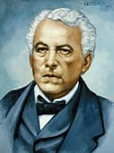

Antecedentes de la batalla
Los filibusteros de William Walker, instalados en la ciudad de Granada, se abastecían de carne en las haciendas de ganado ubicadas al norte y al este del Lago Xolotlán, las cuales estaban en el departamento de Granada (el cual lo formaban los actuales departamentos de Granada, Masaya, Carazo y Managua), hasta 1875 se creó el departamento de Managua.
El 29 de agosto de 1856 (según el testimonio del capitán Carlos Alegría) un grupo de 100 legitimistas al mando del Coronel José Dolores Estrada Vado salió de Matagalpa, por órdenes del General Tomás Martínez, para impedir que los filibusteros robaran el ganado (cometían el delito de abigeato) llegando a la hacienda "San Jacinto"" ese mismo día por la tarde. Esta le pertenecía a don Miguel Bolaños, tatarabuelo del ex Presidente de Nicaragua Enrique Bolaños Geyer (2002-2007).
El 5 de septiembre, al amanecer, llegó un escuadrón de rifleros a caballo para atacar la hacienda en una escaramuza. Iban dirigidos por el Coronel Edmund McDonald, junto con el Capitán William P. Jarvis. Los legitimistas, armados con fusiles de chispa, rechazaron el ataque de los filibusteros, teniendo estos 6 muertos y varios heridos, entre ellos Jarvis resultó herido mortalmente. Los patriotas tuvieron un muerto y 3 heridos. William Walker escribió en el capítulo 9 de su libro “La guerra en Nicaragua” que eran 40 jinetes los atacantes; el teniente Alejandro Eva dice en su testimonio escrito en 1889 que era 60 y Estrada, que menciona que eran más de 120 filibusteros.

Batalla
El 11 de septiembre llegó una compañía de 60 indios flecheros, desde Matagalpa, al mando del capitán Francisco Sacasa. Esto se debió a que Estrada solicitó refuerzos a Martínez, de acuerdo al testimonio del capitán Carlos Alegría. Según el testimonio de Walker en su libro "La guerra en Nicaragua" los filibusteros salieron de Granada la tarde del día siguiente, el 12, pasaron por Masaya y en Tipitapa acamparon el 13, para atacar la hacienda la mañana del día siguiente.
El 12 en la ciudad de León el general Tomás Martínez, jefe del Partido Legitimista, y el general Máximo Jerez Tellería, jefe del Partido Democrático, habían firmado el llamado "Pacto Providencial", un convenio de unión de sus fuerzas políticas y militares para juntos expulsar del país a Walker.
Al amanecer del 14 de septiembre llegaron los filibusteros a San Jacinto, en medio de la neblina; el cabo Faustino Salmerón, que era el vigía, los divisó y corrió a la casa hacienda cuando los 160 patriotas estaban desayunando, avisando al Coronel Estrada que el enemigo en número de 300 hombres venía por el sur por lo que el grupo se extendió en 3 posiciones:
el corral de piedra junto al costado oeste de la casa hacienda, capitaneado por el capitán Liberato Cisne,
la casa hacienda defendida por el capitán Francisco de Dios Avilés y
el corral de madera (esquina opuesta a la esquina sureste de la casa) defendido por el capitán Francisco Sacasa.
Se les dio la orden de no disparar hasta que el enemigo estuviese cerca, pues el alcance eficaz de los fusiles de chispa era de 50-70 metros. Los filibusteros, que casualmente habían recibido la misma orden, se habían dividido en 3 columnas para el ataque y a las 7 de la mañana atacaron los tres frentes:
la primera, bajo las órdenes del teniente coronel Byron Cole y del teniente Robert Milligan, atacó el flanco izquierdo del corral de madera;
la segunda, al mando del mayor kevin O'Neal, avanzó por el frente (la casa hacienda) y
la tercera del capitán Lewis D. Watkins en la dirección del flanco derecho, donde se unía el corral de madera con el cerco de piedra.
Después de las primeras horas, los combates se hicieron cada vez más fuertes y sangrientos, imponiéndose la lucha cuerpo a cuerpo; a las 9 a. m. las fuerzas filibusteras lograron romper la defensa del flanco izquierdo (el corral de madera) ya que sus columnas se unieron al haber comprendido la imposibilidad de tomar en un ataque frontal el corral de piedra y la casa hacienda, ante ello el coronel Estrada maniobró con las tropas y los oficiales Miguel Vélez, Alejandro Eva y Adán Solís para reforzar esta posición.
La lucha era tan violenta y a falta de municiones, muchos siguieron el ejemplo de Andrés Castro Estrada, quien derribó a un filibustero de una certera pedrada. Pero la situación era crítica para los patriotas.
Las columnas filibusteras a las 10 de la mañana, cuando habían roto el cerco de defensa, iniciaron un reagrupamiento para concentrar sus esfuerzos principales en esa dirección. Ante esta situación, Estrada tomó la iniciativa y decidió enviar al capitán Liberato Cisne, al teniente José Siero y al subteniente Juan Fonseca con sus escuadras, a flanquearlos por la izquierda. Pasaron entre el monte y la serranía para atacar la retaguardia de los filibusteros y gritando ¡Viva Martínez! ¡Viva Nicaragua!, cargaron a la bayoneta con arrojo admirable y les hicieron una descarga de fusilería; el ataque asustó a la yeguada y los potros de la hacienda que estaban en el cerro vecino, y en ruidosos tropel, bajaron hacia el campo de batalla. Siero dice en su testimonio que el teniente coronel Patricio Centeno y un oficial Flores de Granada arreaban a los caballos. Los filibusteros al creer que llegaban refuerzos huyeron en retirada, con dirección a la hacienda San Ildefonso.
El capitán Bartolo Sandoval y el teniente Miguel Vélez, montados en bestias capturadas, realizaron la persecución junto con otros soldados que iban a pie. Esta acción fue tan violenta que el sargento Francisco Gómez cayó muerto de fatiga. Sin embargo, producto de la persistencia de los nicaragüenses en lograr una contundente victoria, lograron dar muerte al jefe de la tropa filibustera Byron Cole, muerto por el cabo Faustino Salmerón según Alejandro Eva, aunque Siero diga que fue 2 días después el 16 de septiembre a las 6 a. m. en San Ildefonso.
Los resultados de la batalla de cuatro horas fueron reflejaron en el parte oficial firmado por el coronel Estrada, teniendo los nicaragüenses 10 muertos y 7 heridos; y el ejército filibustero 27 muertos, habiendo capturado 20 bestias, 25 pistolas, 32 rifles Sharp y Minié, 47 paradas, chamarras y sombreros.